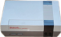

Introduction


FCEUX is a Nintendo Entertainment System (NES), Famicom, and Famicom Disk System (FDS) emulator. It supports both PAL (European) and NTSC (USA/JPN) modes. It supports both Windows and SDL versions for cross compatibility.
the FCEUX concept is that of an "all in one" emulator that offers accurate emulation and the best options for both casual play and a variety of more advanced emulator functions.
For pro users, FCEUX offers tools for debugging, rom-hacking, map making, Tool-assisted movies, and Lua scripting
FCEUX is an evolution of the original FCE Ultra emulator. Over time FCE Ultra had separated into many distinct branches.
The concept behind FCEUX is to merge elements from FCEU Ultra, FCEU rerecording, FCEUXD, FCEUXDSP, FCEUXDSP CE, and FCEU-mm into a single branch of FCEU.
As the X implies, it is an all-encompassing version of the FCEU emulator that provides the best of all worlds for the general player,
the ROM-hacking community, and the Tool-Assisted Speedrun Community.
For more details see the version history
You can find out what we've been up to since the last release by checking the changelog directly.
We also have and IRC channel #fceu on freenode.net
Latest Release
FCEUX 2.1.2
03 November 2009
The 2.1.2 release that fixes some bugs of 2.1.1, increases game compatibility, launches a new PPU core, and adds usability enhancements to the windows port.
Common
- New PPU is now functional! You can access it by changing the newPPU flag in the config file. Windows users can access it from Config > PPU > New PPU
- Dragon Ball Z 3 now playable again
- Fixed action 52 game that was broken in post-FCEUX 2.0.3 versions
- Mapper 253 mostly implemented
- Mapper 43 fixed bug
Win32
- Imported NSF features from FCEUXDSP-NSF. Debugging tools are now compatible with NSF files.
- Movies now record FDS disk swapping commands
- Movie play dialog displays movie time based on ~60.1 (~50.1 PAL) instead of 60 and 50
- Ram Watch and Ram Search dialogs imported from GENS rerecording
- Ram Filter dialog removed (now redundant compared to both cheat search and ram search)
- Lua script window ported from GENS
- Fix for the directory overrides bug that caused overrides to reset
- Debugger: .deb file saving/loading restored
- "Save config file" menu item
- "New PPU" menu item
- Minor Bug fixes
- Minor fixes to recent menus
- Fixed a bug that prevented the Map Hotkeys dialog's X button from closing the dialog
- Restored DPCM Logging when Code/Data Logger is active
- Memory watch - Save Changes Prompt - clicking save will default to quicksave first and save as 2nd (instead of always defaulting to save as)
- Made Trace Logger refresh adequately when using stepping options in the debugger.
Lua
- joypad.set() fixed. True,False, and Nil now work properly for all buttons. In addition there is a new "invert" option.
- Lua5.1.dll no longer required to use lua.
- fceu.unpause()
- Added savestate.registerload(), savestate.registersave(), savestate.loadscriptdata()
- emu. library, has all the same functions as fceu. library for better compatibility between lua emulators
- Many additional function names to increase consistency with other lua emulators
- Added movie.recording() and movie.playing()
- Added memory.getregister() and memory.setregister()
- Added gui.popup and input.popup
- Added savestate.registerload(), savestate.registersave(), and savestate.loadscriptdata()
New Lua Scripts
- A multi-track movie recording tools written by FatRatKnight. Allows input for different players to be recorded separately.
- A rewinding tool written by Jonathan Blow